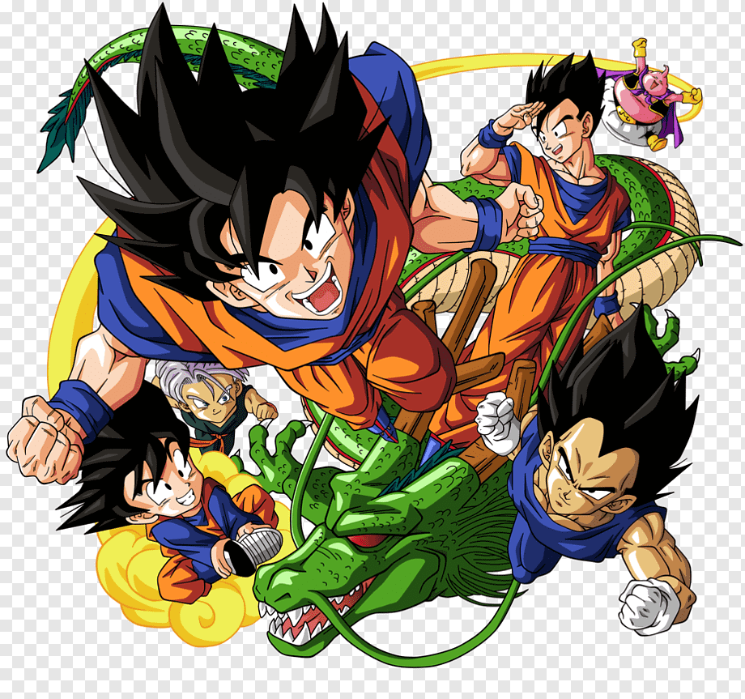

<ion-header [translucent]="true">
  <ion-toolbar>
    <ion-title>
      Favoritos
    </ion-title>
  </ion-toolbar>
</ion-header>

<ion-content [fullscreen]="true">
  <ion-card>
    <ion-card-header>
      <ion-card-title>Lista</ion-card-title>
      <ion-card-subtitle>Meus animes</ion-card-subtitle>
    </ion-card-header>
    <ion-card-content>
      <ion-list>
        <ion-item>
          <ion-thumbnail slot="start">
            
          </ion-thumbnail>
          <ion-label>Item</ion-label>
        </ion-item>
  
        <ion-item>
          <ion-thumbnail slot="start">
            
          </ion-thumbnail>
          <ion-label>Item</ion-label>
        </ion-item>
  
        <ion-item>
          <ion-thumbnail slot="start">
            
          </ion-thumbnail>
          <ion-label>Item</ion-label>
        </ion-item>
  
        <ion-item lines="none">
          <ion-thumbnail slot="start">
            
          </ion-thumbnail>
          <ion-label>Item</ion-label>
        </ion-item>
      </ion-list>
    </ion-card-content>
  </ion-card>

</ion-content>
